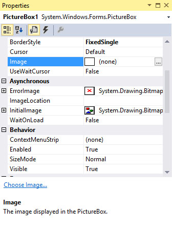
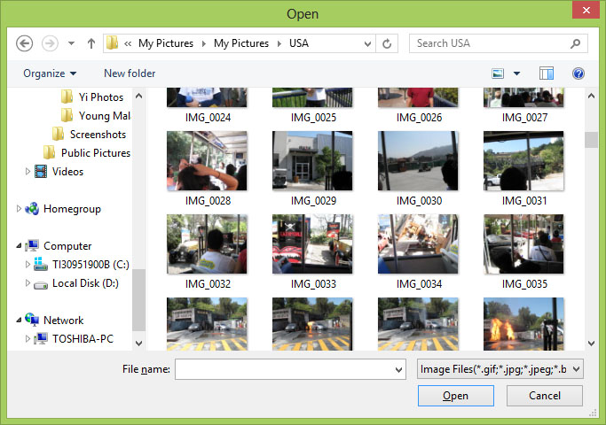
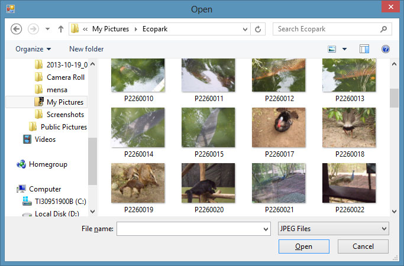

Visual Studio 2013 Lesson 7: Displaying Images in the Picture Box
[Lesson 6] << [Contents] >> [Lesson 8]
In lesson 3, we have learned how to insert a picture box on the form in Visual Studio 2013 . However, we have not learned how to load a picture in the picture box yet. In this lesson, we shall learn how to load an image into the picture box at design time and at runtime. Besides that, we shall also learn how to using a common dialog control to browse for image files in your local drives and then select and load a particular image in the picture box.
7.1 Loading an Image in a Picture Box
7.1.1 Loading an Image at Design Time

{kind=link}
Figure 7.1
Next, click on the grey button on its right
to bring out the “Select Source” dialog box , as shown in Figure 7.2

Figure 7.2
Now select local source and click on the Import button to view the available image files in your local drives, as shown in Figure 7.3  Finally, select the image you like and then click the open button, the image will be displayed in the picture box, as shown in Figure 7.4
{kind=link}
{kind=link}
7.1.2 Loading an Image at Runtime
In Visual Studio 2013 , an image can also be loaded at runtime, using the code as follows:
Private Sub Form1_Load(sender As Object, e As EventArgs) Handles MyBase.Load
PictureBox1.Image = Image.FromFile(“C:\Users\Toshiba\Pictures\My Pictures\USA\Chicago 2012.jpg”)
End Sub
* You need to search for an image in your local drive and determine its path.
Running the program will display the same image in the picture box as in Figure 7.4
7.2 Loading an Image in a Picture Box using Open File Dialog Control
We have designed the picture viewer interface in lesson 3. Now we shall write code so that the user can browse for the image files in his or her local drives then select a particular image to display in the picture box.
First, we need to add the
OpenFileDialog control on the form. This control will be
invisible during runtime but it facilitates the process of
launching a dialog box and let the user browse his or her
local drives and then select and open a file. In order for
the OpenFileDialog to display all types of image files, we
need to specify the types of image files under the Filter
property. Before that, rename OpenFileDialog as
OFGSelectImage. Next, right-click on the OpenFileDialog
control to access its properties window. Beside the Filter
property, specify the image files using the format:
JPEG Files| *.JPG|GIF
Files|*.GIF|WIndows Bitmaps|*.BMP
as shown in Figure 7.5. These are the common image file
formats. Besides that, you also need to delete the default
Filename.
{kind=link}
Figure 7.5
Next, double-click on the View button and enter the following code:
Private Sub Button1_Click(sender As Object, e As EventArgs) Handles Button1.Click
If OFGSelectImage.ShowDialog =
Windows.Forms.DialogResult.OK Then
PictureBox1.Image = Image.FromFile(OFGSelectImage.FileName)
End If
End Sub
Press F5 to run the program and click the View button, a dialog box showing all the image files will appear, as shown in Figure 7.6
Figure 7.6
{kind=link}
Please notice that that the default
image file is JPEG as we have placed it in the first place
in the Filter property. Selecting and opening an image file
will load it in the picture box, as shown in Figure 7.7
{kind=link}